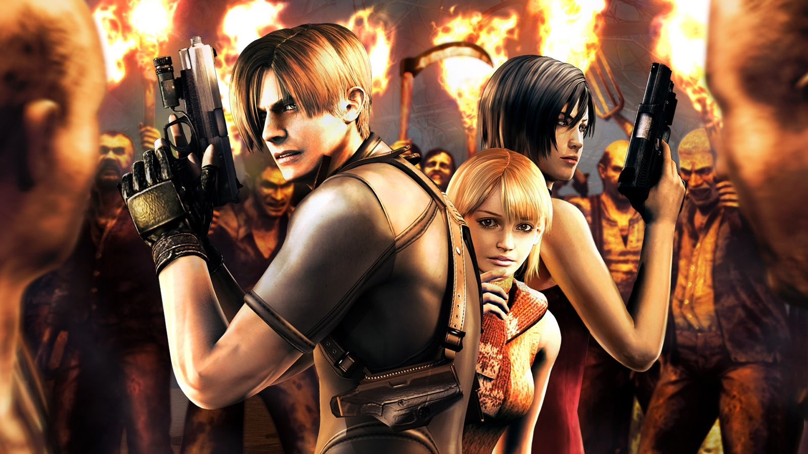
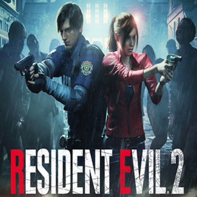
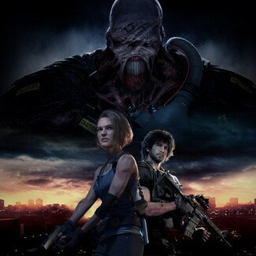
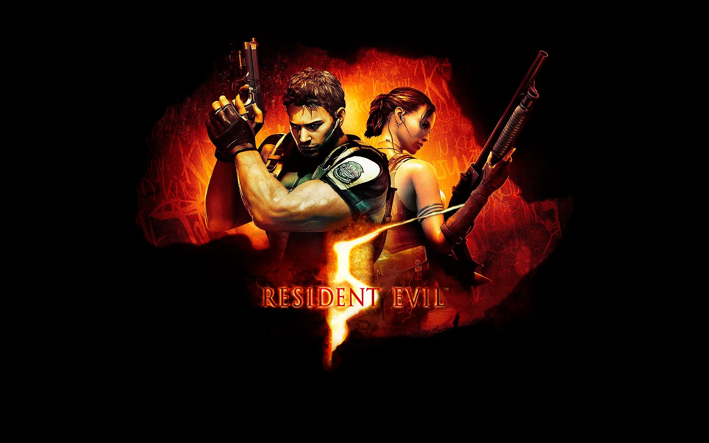
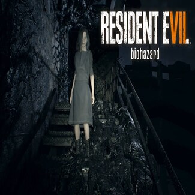

Resident Evil
{kind=link}
Resident Evil cuyo título original en Japón es Biohazard es un videojuego de terror del subgénero horror de supervivencia desarrollado y publicado por Capcom, originalmente para PlayStation en 1996, y es el primer juego de la serie Resident Evil. La trama del juego sigue a Chris Redfield y Jill Valentine, miembros de una fuerza de élite conocida como S.T.A.R.S., mientras investigan las afueras de Raccoon City tras la desaparición de los miembros de su equipo. Pronto quedan atrapados en una mansión infestada de zombis y diferentes tipos de monstruos. Dentro del juego, "El jugador", después de haber elegido jugar como Chris o Jill, debe explorar la mansión para descubrir sus secretos.
Trailer
Resident Evil 2
{kind=link}
Resident Evil 2 cuyo título original en Japón es Biohazard RE:2 es un videojuego de terror y supervivencia de disparos en tercera persona desarrollado y publicado por Capcom, se trata de una nueva versión del videojuego homónimo de 1998. El jugador controla al oficial de policía novato Leon S. Kennedy y a la estudiante universitaria Claire Redfield mientras intentan escapar de Raccoon City durante un brote de zombis y monstruos. El título fue confirmado por Capcom el año 2015, aunque su lanzamiento oficial no fue anunciado hasta la conferencia de prensa de Sony de la E3 2018, para el mes de enero del año 2019.
Trailer
Resident Evil 3
{kind=link}
Resident Evil 3 cuyo título original en Japón es Biohazard RE: 3 es un videojuego de acción y aventura de disparos en tercera persona perteneciente al subgénero de terror y supervivencia desarrollado y publicado por Capcom, se trata de una nueva versión del videojuego homónimo de 1999. Los jugadores siguen a los personajes de Jill Valentine y Carlos Oliveira intentando sobrevivir a un apocalipsis zombi en Raccoon City mientras son perseguidos por Nemesis, la nueva e inteligente arma biológica de Umbrella. Fue lanzado el 3 de abril de 2020 para las consolas PlayStation 4, Xbox One y para Microsoft Windows junto con un modo multijugador en línea llamado Resident Evil: Resistance. El juego recibió críticas generalmente favorables, destacando sus gráficos, presentación y jugabilidad, aunque tuvo una recepción mixta por parte de los jugadores debido a su corta duración, poca rejugabilidad y ausencia de elementos importantes del videojuego original.
Trailer
{kind=link}
Resident Evil 4 conocido en Japón como Biohazard 4 es un videojuego de acción-aventura y disparos en tercera persona de estilo terror y supervivencia desarrollado por Capcom Production Studio 4 y distribuido por varias compañías de videojuegos, como Capcom, Ubisoft, Nintendo Australia, Red Ant Enterprises y THQ Asia Pacific. El título es precedido por Resident Evil 3: Nemesis y se convierte en la cuarta entrega numérica de la serie y a su vez, el quinto juego dentro de la serie principal. Originalmente fue anunciado como exclusiva para Nintendo GameCube como parte de los Capcom Five, donde se lanzó oficialmente el 11 de enero de 2005 en Norteamérica, el 27 de enero de 2005 en Japón y el 18 de marzo de 2005 en Europa Es un videojuego de acción-aventura del estilo survival horror. Por primera vez en la serie, el ambiente cerrado y lineal se deja a un lado para incluir escenarios más grandes y dinámicos, debido a que la historia se desarrolla en un poblado de España. El sistema de juego es diferente e innovador a comparación de las entregas anteriores de la serie. Lo que más destaca en Resident Evil 4 es la forma de apuntar con las armas, dándole la libertad al jugador de elegir de manera realista a donde se dirigirá su disparo.
Trailer
Resident Evil 5
{kind=link}
Resident Evil 5 cuyo título original es Biohazard 5 es un videojuego de acción-aventura y disparos en tercera persona de estilo terror y supervivencia desarrollado por Capcom y distribuido por la misma en colaboración con THQ Asia Pacific. El título es precedido por Resident Evil 4 y sucedido por Resident Evil 6, y se convierte en la quinta entrega numérica de la serie principal. Se lanzó oficialmente para las consolas de PlayStation 3 y Xbox 360 el 5 de marzo de 2009 en Japón, y el 13 de marzo del mismo año en Norteamérica y Europa. Posteriormente se diseñó una versión para Microsoft Windows, la cual se estrenó el 15 de septiembre de 2009 en Norteamérica, el 17 de septiembre de 2009 en Japón y un día después en el continente europeo. Debido al gran éxito, la compañía decidió lanzar una edición especial bajo el nombre de Resident Evil 5: Gold Edition la cual contiene un nuevo capítulo y una campaña que siguen con la trama del juego. Conjuntamente se han estrenado diversos contenidos descargables, disponibles en Xbox Live Marketplace y PlayStation Network, todos ellos incluyen nuevas modalidades, personajes y secretos que amplían su rejugabilidad.
Trailer
{kind=link}
Resident Evil 6 cuyo título original es Biohazard 6 es un videojuego de terror y de acción-aventura de disparos en tercera persona publicado el 2 de octubre de 2012 por la empresa Capcom para PlayStation 3 y Xbox 360. La entrega vendió aproximadamente 8 millones de copias a nivel mundial. Esta entrega se convierte en el séptimo título de la franquicia. También cuenta con una versión para Microsoft Windows que está disponible desde el 22 de marzo de 2013 con audio doblado al español incluido. Esta nueva entrega cuenta con nuevos y viejos personajes anteriores de la saga como Leon S. Kennedy, Chris Redfield, Jake Muller, Ada Wong, Helena Harper, Piers Nivans y Sherry Birkin, quienes son los protagonistas principales. El juego contiene escenarios basados en Estados Unidos, China y los Balcanes. A partir de marzo de 2016, en conmemoración a los 20 años de la saga, se liberarán versiones remasterizadas de los últimos tres juegos numerados de Resident Evil, comenzando con Resident Evil 6 que fue liberado para PlayStation 4 y Xbox One el 29 de marzo de 2016. En octubre del año 2019 el juego es puesto a la venta para Nintendo Switch, siendo sacado a la vez que Resident Evil 5 en dicha consola.
Trailer
Resident Evil 7
{kind=link}
Resident Evil 7: Biohazard, conocido originalmente en Japón como Biohazard 7: Resident Eviles un videojuego de disparos en primera persona perteneciente al género de horror de supervivencia desarrollado y publicado por Capcom, lanzado el 24 de enero de 2017 para Microsoft Windows, PlayStation 4 y Xbox One, con una versión de PlayStation 4 con soporte completo para PlayStation VR. Es el undécimo título de la serie principal de Resident Evil, y, a diferencia de la mayoría de los otros juegos de la franquicia, este es en primera persona, siendo el primero de la saga principal en implementar este tipo de cámara. A diferencia de los juegos previos, Resident Evil 5 y Resident Evil 6, que fueron mucho más orientados a la acción, Resident Evil 7 regresó al género de horror de supervivencia que tanto caracterizaba a la franquicia, enfatizando la exploración. El jugador controla a Ethan Winters mientras busca a su esposa Mia en una plantación abandonada ocupada por una familia controlada por una niña llamada Eveline, que a través de un hongo o un virus respiratorio, infecta el cuerpo y la mente. También este hongo (Virus) tiene fuertes propiedades curativa y a su vez mucha resistencia física, y Ethan Winters planea sacar de su miseria a la familia, luchando contra enemigos y resolviendo acertijos creados por Lucas el hijo que guarda relación con alguna compañía aún no conocida oficialmente.
Trailer
Resident Evil Village

Resident Evil - Village es un videojuego de acción-aventura de disparos en primera persona perteneciente al subgénero de terror y supervivencia desarrollado y publicado por Capcom. la novena entrega de la serie principal de Resident Evil y secuela narrativa de Resident Evil 7: Biohazard del año 2017, el videojuego sigue a Ethan Winters, quien, después de un fatídico encuentro con Chris Redfield, se encuentra en un pueblo lleno de criaturas mutantes en un esfuerzo por encontrar a su hija secuestrada. Si bien Village mantiene los elementos fundamentales de terror de supervivencia de la serie, el videojuego adopta un estilo de videojuego más orientado a la acción en comparación con su predeceso Resident Evil Village también incluye un modo multijugador en línea. El videojuego se anunció en el evento de revelación de la PlayStation 5 en junio de 2020 y se lanzó el 7 de mayo de 2021 para Windows, PlayStation 4, PlayStation 5, Xbox One, Xbox Series X / S y Stadia Switch. El videojuego recibió críticas generalmente favorables